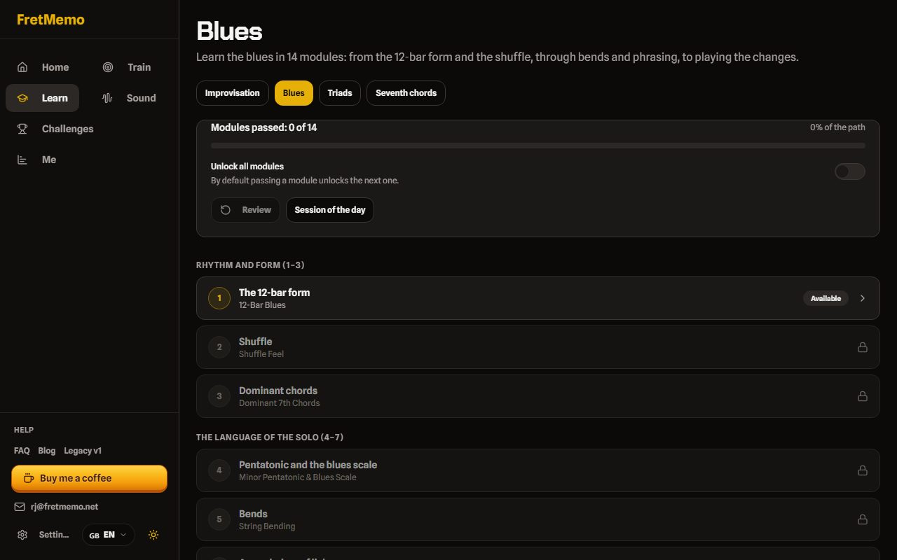

FretMemo's Blues path takes you to your first 12 bar blues guitar solo in 14 free modules. You learn the form and the shuffle, then the pentatonic and the blues scale, bends that your microphone measures in cents, licks, turnarounds and finally playing the changes. Most modules have exercises over a backing loop, and it all runs in the browser without an account.
The blues is where most of us first try to solo, usually by running box 1 up and down over a record. I did that for a long time. It sounds like a blues for about four bars and then it sounds like a scale.

Why a blues solo starts with the form
A 12-bar blues in A is four bars of A7, two of D7, two of A7, then E7, D7 and two more bars of A7. Bar 5, where the IV chord arrives, and bar 9, where the V arrives, are the moments every phrase leads to. If you can't hear where you are in the form, you can't aim for those moments, and the solo turns into a stream of notes.
So module 1 makes you count bars before you solo. There's a quiz on which chord sounds in which bar, and a loop where you play only the root of the chord on beat one of every bar while the microphone checks you. It's a dull exercise, and I'd still do it before anything else.
The 14 modules
- Rhythm and form (1-3). "The 12-bar form", "Shuffle" (the boogie riff with long and short eighths) and "Dominant chords" (A7, D7 and E7 as arpeggios, and why the third and seventh matter).
- The language of the solo (4-7). "Pentatonic and the blues scale", "Bends", "A vocabulary of licks" (six licks in box 1) and "Phrasing", where you play the AAB form of blues lyrics: a phrase, the same phrase again, an answer, with rests in between.
- Colours (8-10). "Major and minor" (major pentatonic over the I chord, minor over IV and V), "Boxes on the top strings" and "Turnarounds", the last two bars that close one chorus and lead into the next.
- Playing the changes (11-14). "Chord tones", "Thirds and sevenths", "Forms of the blues" and "Jazz blues".
Bends with the microphone
With a bend you have to hear whether you landed on the pitch or a little under it, and most of us bend flat for years without noticing. The Bends module has three of the most common ones. The 4th of A (D, 7th fret of the G string) goes up a half step to the blue note, the same D goes up a whole step to E, and G on the 8th fret of the B string goes up a whole step to the root. There's also a quarter-tone curl of the minor third towards the major third.
With the microphone on, a "Bend height" meter shows how many cents above the fretted note you are, against a green target area: 80 to 120 cents for a half step, 180 to 220 for a whole step, 25 to 75 for the curl. A repetition counts when you hold the note in the green area for 0.4 seconds, and each bend needs 5. "Hear the target note" plays the pitch you should land on. Without a mic, "Got it (no microphone)" marks the repetition yourself, and the pass is stored as unverified.
Playing the changes
The pentatonic fits the whole form, but it doesn't tell the listener which chord is playing. "Chord tones" is a loop with three levels: on beat one of every bar land on the root, then the third (C# over A7, F# over D7, G# over E7), then the seventh. Those thirds aren't in A minor pentatonic, which is why they make the change audible.
"Thirds and sevenths" shows how little the guide tones move. When A7 goes to D7, the C# falls a half step to C, and the G falls a half step to F#. "Forms of the blues" then gives you five more forms to play through. The last module is a jazz blues in F with a swing feel, where you land on the third of every chord, including the passing ones. If that's the part you like, the shell and drop 2 voicings post covers comping the same jazz blues.
Under the modules sits "Blues jam": all the forms and the jazz blues on one loop, where you pick a form, a key and a style and just play. It gates nothing, so it works as a reward at the end of a session.
How to start the Blues path
- Open fretmemo.net/improv/blues, or click "Learn" and press "Start" on the "Blues" card.
- Open "The 12-bar form" and read the "Theory" card.
- Do the quizzes, then the loop "Loop: roots on beat one".
- Press "Start", switch on "Verify with mic", allow the microphone and use headphones.
- Play the root of each chord on the first beat of every bar until the loop passes.
- Move to "Shuffle" when the module is passed. If you already solo, switch on "Unlock all modules" and go straight to the module you need.
A deep link such as the Bends module shows "Module locked" until the modules before it are passed or "Unlock all modules" is on.
A 15-minute blues session
The app estimates the path at 2 to 3 months at 15 minutes a day. A session I'd suggest: 3 minutes of bends with the meter, 7 minutes on the current module's loop, then 5 minutes in "Blues jam" with no goal at all. "Session of the day" on the roadmap builds a similar mix for you, with a quiz, a diagram and a loop.
The Blues path is one of four learning paths in FretMemo, which began as a guitar fretboard trainer. The step-by-step improvisation path goes further into modes, chord-scale theory and Giant Steps.
Limits
- The bend meter and the loop checks need microphone permission. Headphones help, so the mic doesn't pick up the backing.
- The loop check only looks at the first beat of each chord. Phrasing loops and the jam are self-marked.
- Licks and fret positions assume standard tuning.
- There is no placement test on this path. If you already play, "Unlock all modules" is the way to skip ahead.
FAQ
How do I play a solo over a 12 bar blues?
Learn the form first, so you know where the IV chord arrives in bar 5 and the V in bar 9. Then solo with the minor pentatonic in one box, use short phrases with rests, and land on chord tones such as the third of each chord when it changes. FretMemo's free Blues path teaches it in that order over backing loops.
What notes should I target in a blues solo?
Start with the root of each chord on beat one, then the thirds: C# over A7, F# over D7 and G# over E7 in a blues in A. The thirds are not in the A minor pentatonic, so they make each chord change audible. FretMemo's Chord tones module checks these targets with your microphone.
How can I check if my guitar bends are in tune?
Play the target note fretted first, then bend to it and compare. FretMemo's Bends module does the comparison with your microphone: it shows how many cents above the fretted note you are and counts a repetition when you hold the bend in the green target area for 0.4 seconds.
Are there free blues guitar lessons with backing tracks?
Yes. FretMemo's Blues path is 14 free modules in the browser, with backing loops in a shuffle and other styles, a key selector and an optional microphone check. It needs no account.
Play your first blues chorus
Open the Blues path and start with the 12-bar form and roots on beat one.
Open the Blues path Free, no account, runs in the browser.